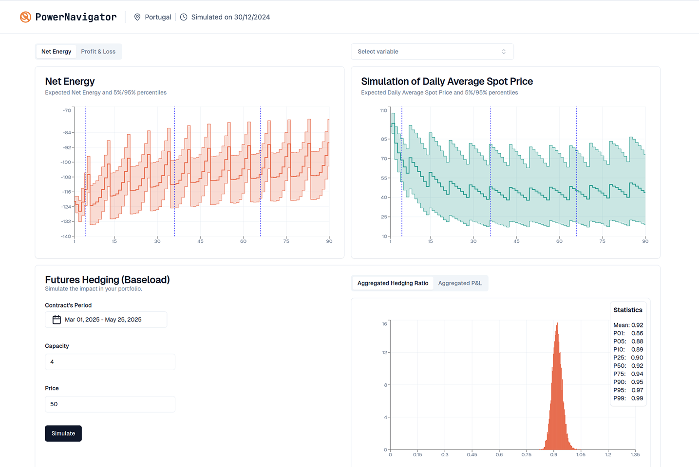
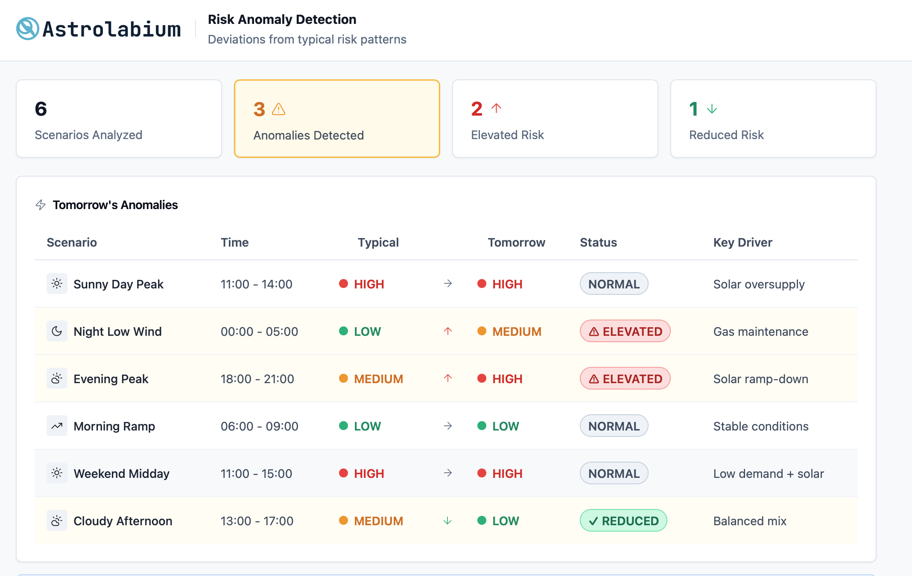
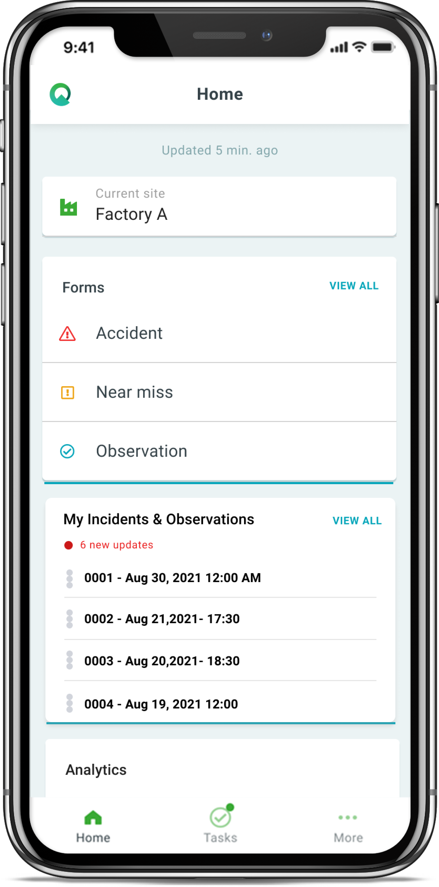
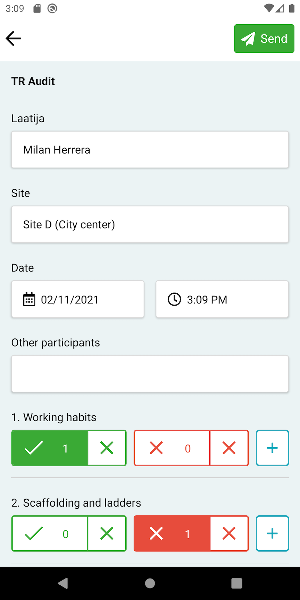
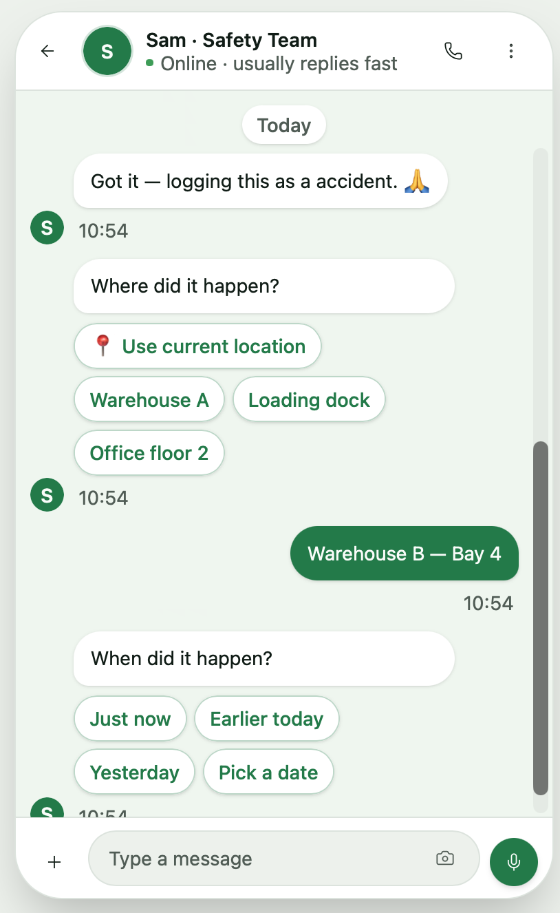

Portfolio
Selected case studies.
Astrolabium
Market Gap
Most risk management tools for energy trading companies were built for large players — expensive, complex, and out of reach for SMBs. Smaller energy companies were trading blind, with no affordable way to anticipate tail-risk events. Especially in Iberia, where heavy solar injection into the market makes volatility the second-biggest problem.
The Tension
Our vision was an AI copilot that would ingest a company's proprietary trading data, learn their patterns, and proactively surface dynamic risk insights. But as a bootstrapped startup, we couldn't justify building that infrastructure before validating whether customers would pay for the underlying value. The core product question became: how do you prove the insight is worth something before investing in the AI that delivers it?
What We Did
- Ran a discovery process with 10+ energy executives to validate the problem and the need.
- Built proprietary AI models trained on Iberian power-market data to identify tail-risk signals, reaching 95% forecast accuracy (in line with benchmarks).
- Reduced the MVP to a visual dashboard that made tail-risk exposure visible and actionable, so traders could see the signal without us building the full copilot first.
- Ran 4 SMB pilots with continuous discovery embedded.
- Discovered through those pilots that SMBs could not pay the price point required to make the business model work.
- Used that finding to pivot the product direction toward enterprise, where dynamic AI-driven risk management could command the right margin.

The Outcome
4 pilots completed. 2 Letters of Intent secured from SMB customers. Validated that the insight had real demand, even if the segment economics didn't work at scale.
What I'd Do Differently
We had an enterprise-grade vision from day one — an AI copilot handling dynamic risk management — but we exclusively piloted with SMBs. In hindsight, I would have held onto that original vision more firmly and run a few enterprise pilots in parallel, even at an early stage. The SMB pricing ceiling was a segment constraint, not a product constraint. Experimenting with enterprise earlier might have given us the commercial green light we needed to justify the full build.

Project Two
The Problem
Frontline workers struggled with complex incident reporting forms. The issue was a cognitive gap between how workers naturally describe safety events and how rigid enterprise systems require them to be categorized. Safety managers also complained that training workers on these forms was incredibly time-consuming — even after extensive training sessions, submitted reports frequently lacked the proper data required for compliance.
The Tension
This initiative started right after ChatGPT launched, when LLMs were at peak hype. Management was skeptical about whether this was just a trend. The biggest risk was technical and compliance-driven: could an LLM actually map unstructured chat into strict enterprise safety fields without hallucinating?
What I Did
- Led a conversational AI PoC using LangChain to replace traditional reporting forms with natural-language interactions.
- Prioritized technical validation over UX polish — started by training the LLM on very simple forms before tackling more complicated compliance workflows, ensuring the core mapping capability actually worked.



The Outcome
After a successful PoC, got buy-in from upper management and started recruiting customers for partnership.
What I'd Do Differently
Looking back, I wouldn't change the technical or product execution at all. Instead, I would have made much more noise internally and championed the project with more visible enthusiasm. When you're introducing emerging technology into a skeptical environment, proving it works is only the first step — you also have to confidently sell the vision and make people believe in its potential. I could have been a louder, more enthusiastic advocate for the massive impact this solution could have.